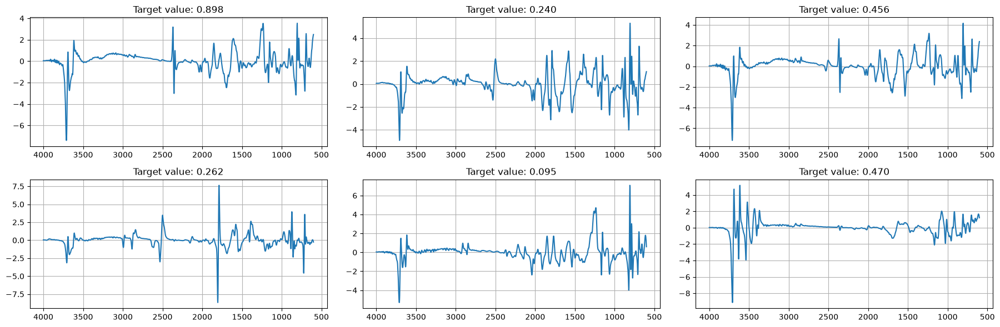
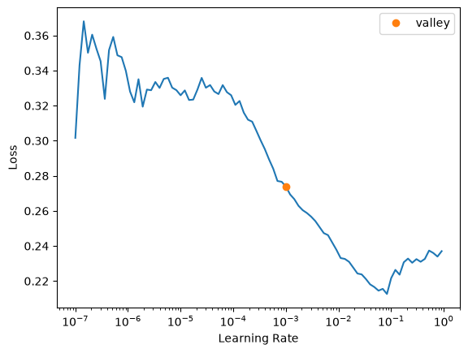

import numpy as np
from sklearn.pipeline import Pipeline
from soilspecdata.all import *
from soilspectfm.all import *
from fastai.learner import Learner
from fastai.losses import MSELossFlat
from fastai.metrics import R2Score
from fastai.callback.schedule import *
from soilspecdl.all import *SoilSpecDL
Deep learning for soil infrared spectra, built on fastai
SoilSpecDL trains deep learning models on soil infrared spectra. It builds fastai DataLoaders from spectra and soil properties, and provides 1D convolutional neural networks (CNNs) for spectra, including the architecture of Albinet et al. (2022). Any fastai Learner can then train them, with fastai’s learning rate finder, one-cycle training and callbacks.
SoilSpecDL follows the fastai philosophy: state-of-the-art deep learning should be accessible to domain scientists, not just to machine learning practitioners. If you are a soil scientist who uses R packages like resemble or prospectr, this package is designed with you in mind. Training a CNN on a large MIR spectral library should take a few lines of code, not a PhD in machine learning.
SoilSpecDL is part of a Python ecosystem for soil spectroscopy:
- SoilSpecData loads the Open Soil Spectral Library (OSSL) as spectra and soil properties ready for machine learning.
- SoilSpecTfm preprocesses spectra with scikit-learn transformers.
- SoilSpecDL trains deep learning models on them.
Installation
pip install -U soilspecdlTo install the development version, with nbdev, run this in the project root with uv:
uv sync --extra devQuick start
from soilspecdl.all import * imports every SoilSpecDL function and class. Each also has its own module, such as soilspecdl.models, for explicit imports. The fastai imports show what SoilSpecDL uses from fastai: the Learner, a loss, a metric, and the training schedule that adds fit_one_cycle and lr_find.
This example predicts exchangeable potassium (Kex) from the MIR spectra of the Open Soil Spectral Library (OSSL). SoilSpecData gives the spectra and Kex values of every OSSL sample that has both. The first call to load_ossl downloads about 1 GB, and loading needs about 12 GB of memory. The example preprocesses the spectra with standard normal variate (SNV) and a first derivative, and log-transforms Kex, whose distribution is skewed. Then it trains MirzaiCNN, the CNN of Albinet et al. (2022):
mir = load_ossl().mir()
X, y, ids = mir.xy('k.ext_usda.a725_cmolc.kg')
pipe = Pipeline([
('snv', SNV()),
('deriv', SavitzkyGolay(deriv=1))])
X_tfm = pipe.fit_transform(X)
y_tfm = np.log1p(y.flatten())get_spectral_dls splits the samples into train, validation and test sets, and returns the fastai DataLoaders and the test set’s indices. StandardizeSpectrum rescales each spectrum after the derivative has shrunk it, to the scale a CNN’s weight initialization expects. Each spectrum in a batch plots against its wavenumbers:
dls, test_idx = get_spectral_dls(
X_tfm, y_tfm, mir.wavenumbers,
batch_tfms=[StandardizeSpectrum()])
dls.show_batch(max_n=6, ncols=3)
Train MirzaiCNN with a fastai Learner, with mean squared error as the loss and R² as the metric:
learn = Learner(
dls, MirzaiCNN(),
loss_func=MSELossFlat(),
metrics=R2Score())Find a learning rate, then train:
learn.lr_find()SuggestedLRs(valley=0.0010000000474974513)
learn.fit_one_cycle(20, lr_max=1e-3)| epoch | train_loss | valid_loss | r2_score | time |
|---|---|---|---|---|
| 0 | 0.095762 | 0.075750 | 0.464282 | 00:07 |
| 1 | 0.075270 | 0.065856 | 0.534250 | 00:08 |
| 2 | 0.067920 | 0.217066 | -0.535135 | 00:08 |
| 3 | 0.065452 | 0.174799 | -0.236214 | 00:08 |
| 4 | 0.056049 | 0.107070 | 0.242781 | 00:08 |
| 5 | 0.052376 | 0.064878 | 0.541171 | 00:07 |
| 6 | 0.051645 | 0.072169 | 0.489606 | 00:08 |
| 7 | 0.052505 | 0.051545 | 0.635461 | 00:08 |
| 8 | 0.043817 | 0.095978 | 0.321224 | 00:07 |
| 9 | 0.043177 | 0.038569 | 0.727231 | 00:08 |
| 10 | 0.035958 | 0.045942 | 0.675091 | 00:07 |
| 11 | 0.033559 | 0.036335 | 0.743031 | 00:07 |
| 12 | 0.030954 | 0.034623 | 0.755139 | 00:07 |
| 13 | 0.031828 | 0.034456 | 0.756324 | 00:10 |
| 14 | 0.031579 | 0.035145 | 0.751448 | 00:08 |
| 15 | 0.028053 | 0.032126 | 0.772796 | 00:07 |
| 16 | 0.027793 | 0.031156 | 0.779655 | 00:08 |
| 17 | 0.026475 | 0.031309 | 0.778577 | 00:08 |
| 18 | 0.028219 | 0.030562 | 0.783858 | 00:08 |
| 19 | 0.026852 | 0.030464 | 0.784555 | 00:08 |
Upgrading from 0.0.x
Version 0.1.0 changes the API of soilspecdl. To update code written for version 0.0.x:
MirzaiCNNis now a function that returns aSpectralCNN. It no longer acceptsout_channelorconv_block_cls. Weights saved from version 0.0.x load unchanged.FeatureExtractortakes the output channels of each block asnfs, instead ofout_channelandn_layers. It returns(batch, channels)instead of(batch, channels, 1).SpectralBlock()is nowSpectralBlock(wns).- The
TensorSpectrum.wnsclass attribute is gone. Each spectrum carries its wavenumbers inwns, andget_spectral_dlsstores them once indls.wns. get_spectral_dlsraises aValueErrorwhenwnsdoes not have one value per column ofX.get_splitterraises aValueErrorwhentrain_pct + valid_pctexceeds 1. Before, its check could never fail.get_fuku_cs137,ConvBlockBaseline,RegressionFloatBlock,SpectralTarget,cnt_params,get_mir_k_1k_smpand thesoilspecdl.coremodule are gone. To count a model’s parameters, use fastai’slearn.summary(). For example data, useload_toy_kssl.- SoilSpecDL now requires SoilSpecData 0.2.1 or later, and SoilSpecTfm 0.1.1 or later.
Contributing
Contributions are welcome. SoilSpecDL is built with nbdev: the notebooks in nbs/ are the source of the code, the documentation and the tests. After changing a notebook, export the code, run the tests, clean the notebooks and rebuild the README with:
uv run nbdev-prepareReport bugs and ask questions in GitHub issues.
License
SoilSpecDL is under the Apache 2.0 licence. The toy dataset comes from OSSL, which publishes KSSL data under CC BY 4.0.